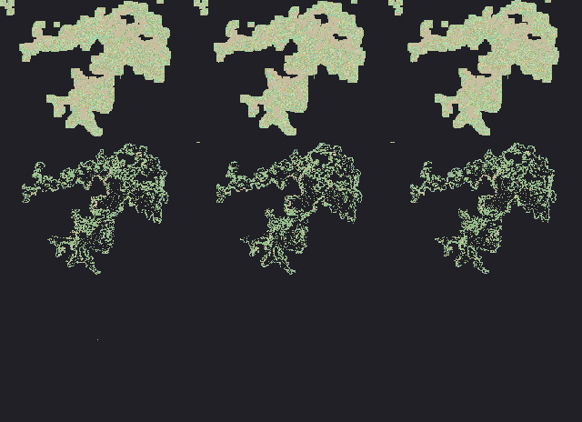
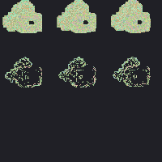
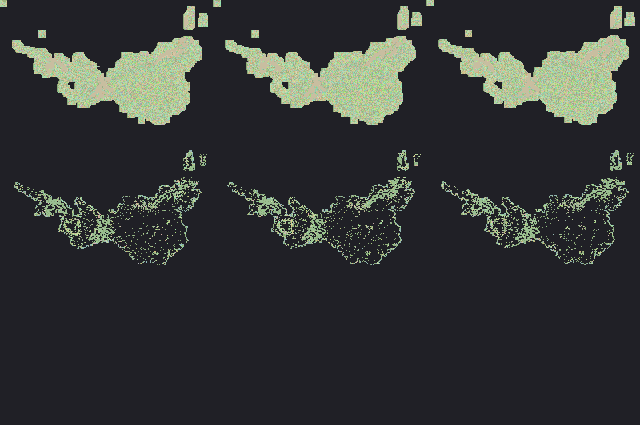
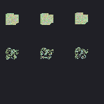
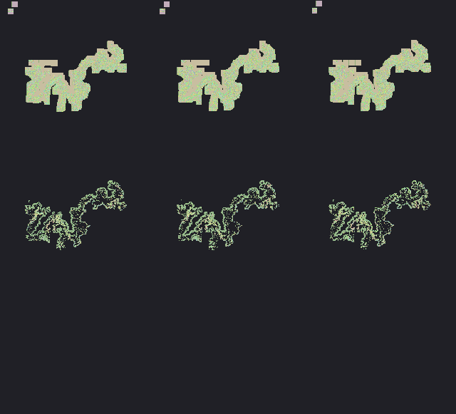
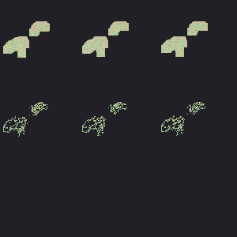
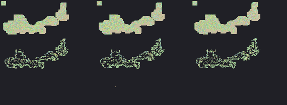

深灰=不可走/边界；浅色=可走（颜色随地砖 ID 略变化）。由 tools/preview_maps_map0_under_1000.py 生成。
共 8 / 8 张成功。
| mapId | 尺寸 / 错误 | 预览 |
|---|---|---|
| 100 | 840×610 |  |
| 101 | 200×200 |  |
| 300 | 800×532 |  |
| 301 | 150×150 |  |
| 302 | 120×40 | |
| 400 | 727×661 |  |
| 401 | 300×300 |  |
| 402 | 570×210 |  |